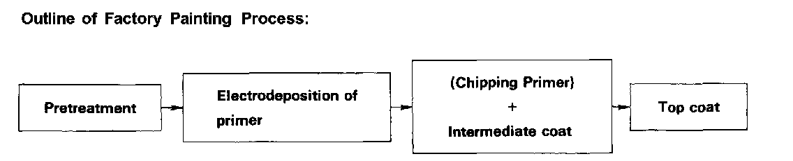
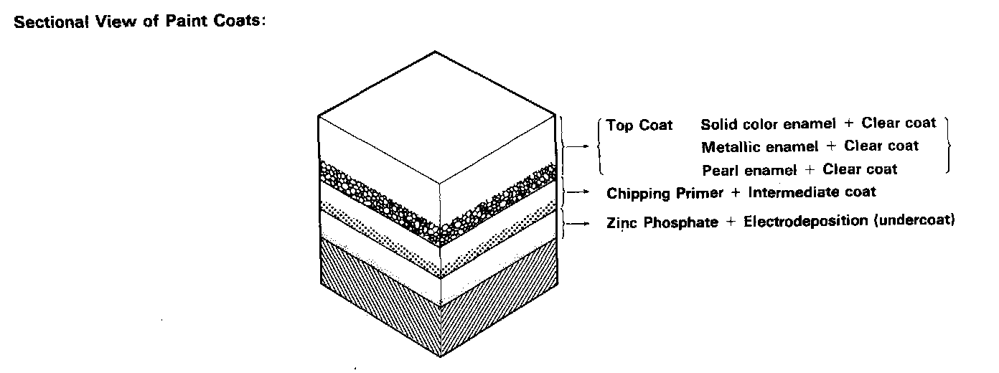

3C-3B (3-Coat 3-Bake) Paint
General3C-3B paint finish gives the INTEGRA a deep gloss and stunning finish. This manual provides information on paint defect repair and refinishing. Throughout, the objective has been to explain in a simple yet comprehensive manner the basic items you should know about paint repairs. Select the correct material for the defect and repaint or refinish in the correct manner as described.
WARNING:
- Most paints contain substances that are harmful if inhaled or swallowed. Read the paint label before opening the container. Spray paint only in a well ventilated area.
- Cover spilled paint with sand, or wipe it up at once.
- Wear an approved respirator, gloves, eye protection and appropriate clothing when painting. Avoid contact with skin.
- If paint gets in your mouth or on your skin, rinse or wash thoroughly with water. If paint gets in your eyes, flush with water and get prompt medical attention.
- Paint is flammable. Store it in a safe place, and keep it away from sparks, flames or cigarettes.
Basic Rules in Repairing a 3C-3B paint finish
To repair paint damage, always use the 2-part acrylic urethane paints designated; polish and bake each of the three coats, as in production, to maintain the original film thickness, and to assure the same quality as the original finish.

Outline of Factory Painting Process:
Features in Each Work Process
1. Pretreatment and Electrodeposition
In the pretreatment process, the entire body is degreased, cleaned, and coated with zinc phosphate by dipping. After the body has been cleaned with pure water, it is placed in an electrolytic bath of soluble primer (Cationic Electrodeposition). This produces a thorough corrosion inhibiting coating on the inner surfaces and corners of the body, pillars, sills and panel joints. Chipping primer is then applied to the most susceptible areas.
2. Intermediate coat
The intermediate coat is applied to the prepared surface for further protection against damage.

3. Top coat
Enamel paint and either polyester or acrylic resin paint are used in the top coat for higher solidity, smoothness, brightness, and weather resistance.